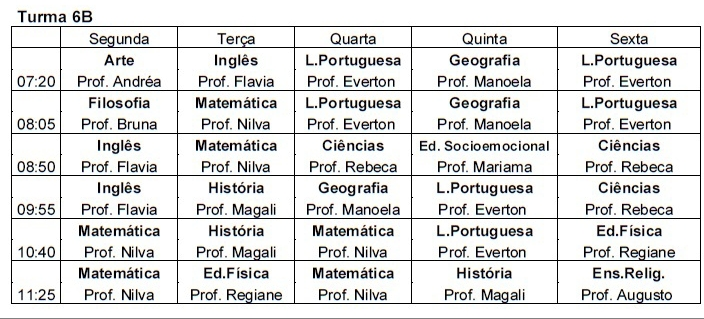
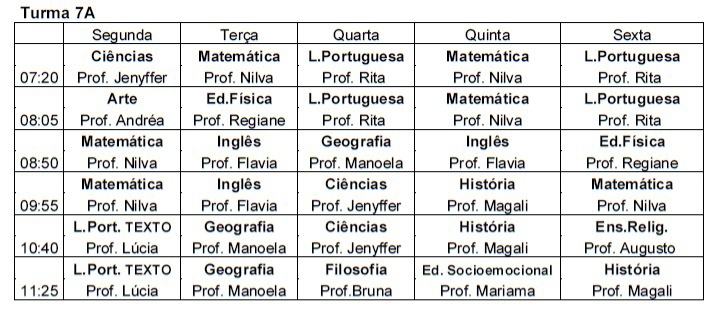
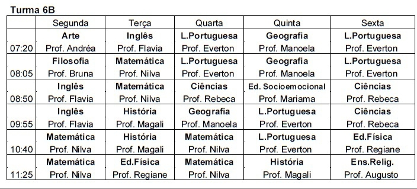
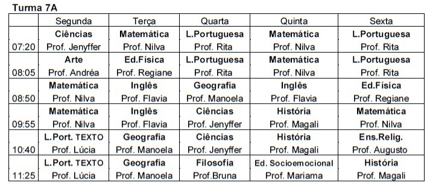
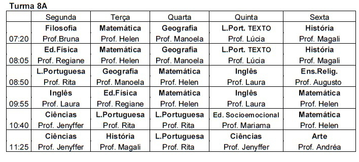
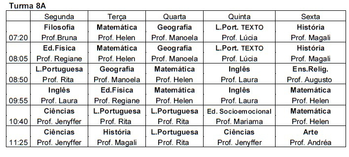

Pra quê página de avisos?
Torna-se necessário para toda instituição, seja ela de ensino ou empresa, ter uma maneira de divulgar avisos e informações referentes a atualizações que ocorreram na empresa. Tal iniciativa é necessária, visto que, por exemplo, em tabela de preços necessita-se sempre ocorrer atualizações sempre visando a obtenção de lucros.
No caso da página do momento, esta tem como finalidade anunciar avisos referentes a ETE-MFL, tais como paralizações, dia de reunião, etc.. Tudo com o intuito de melhorar a comunicação existente entre escola e público.
Nesta página serão encontrados os horários de aulas das turmas e avisos escolares.
 



 
